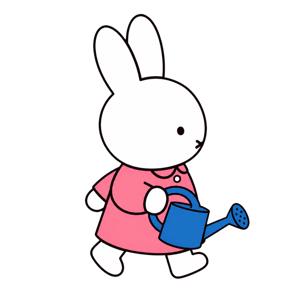
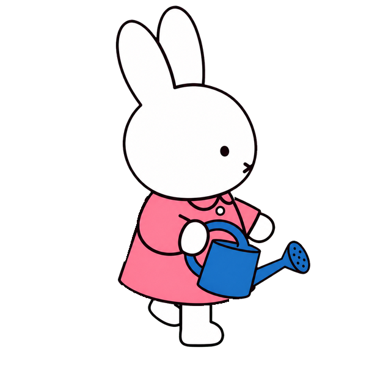
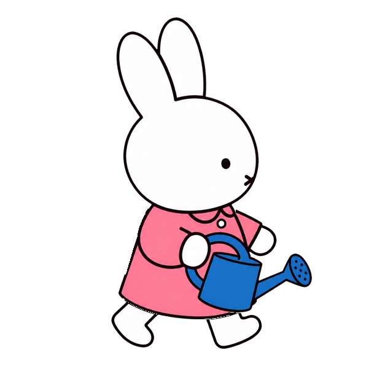
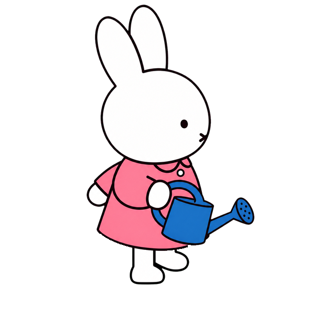

Miffy — garden walk v2
Four frames at the app's 0.58-second loop timing. Water G1 uses the same display size.
Walk right
Walk left (mirrored)
Water G1 — unchanged
Original 627 × 627 frames

W1 · right contact

W2 · left passing

W3 · left contact

W4 · right passing